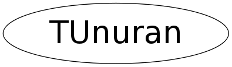

class TUnuran
TUnuran class. Interface to the UNU.RAN package for generating non uniform random numbers. This class wraps the UNU.RAN calls in C++ methods. It provides methods for initializing Unuran and then to sample the desired distribution. It provides support for initializing UNU.RAN in these following way (various signatures for TUnuran::Init) - with string API via TUnuran::Init passing the distribution type and the method - using a one-dimensional distribution object defined by TUnuranContDist - using a multi-dimensional distribution object defined by TUnuranMultiContDist - using a discrete one-dimensional distribution object defined by TUnuranDiscrDist - using an empirical distribution defined by TUnuranEmpDist - using pre-defined distributions. Presently only support for Poisson (TUnuran::InitPoisson) and Binomial (TUnuran::InitBinomial) are provided. Other distributions can however be generated using the previous methods (in particular via the string API) The sampling is provided via these methods: - TUnuran::Sample() returns a double for all one-dimensional distribution - TUnuran::SampleDiscr() returns an integer for one-dimensional discrete distribution - TUnuran::Sample(double *) sample a multi-dimensional distribution. A pointer to a vector with size at least equal to the distribution dimension must be passed In addition is possible to set the random number generator in the constructor of the class, its seed via the TUnuran::SetSeed() method.
Function Members (Methods)
public:
| TUnuran(TRandom* r = 0, unsigned int log = 0) | |
| ~TUnuran() | |
| TRandom* | GetRandom() |
| bool | Init(const string& distr, const string& method) |
| bool | Init(const TUnuranContDist& distr, const string& method = "auto") |
| bool | Init(const TUnuranMultiContDist& distr, const string& method = "hitro") |
| bool | Init(const TUnuranDiscrDist& distr, const string& method = "auto") |
| bool | Init(const TUnuranEmpDist& distr, const string& method = "empk") |
| bool | InitBinomial(unsigned int ntot, double prob, const string& method = "dstd") |
| bool | InitPoisson(double mu, const string& method = "dstd") |
| const string& | MethodName() const |
| bool | ReInitDiscrDist(unsigned int npar, double* params) |
| double | Sample() |
| int | SampleDiscr() |
| bool | SampleMulti(double* x) |
| bool | SetLogLevel(unsigned int iflag = 1) |
| bool | SetLogStream() |
| void | SetRandom(TRandom* r) |
| void | SetSeed(unsigned int seed) |
protected:
| bool | SetContDistribution(const TUnuranContDist& dist) |
| bool | SetDiscreteDistribution(const TUnuranDiscrDist& dist) |
| bool | SetEmpiricalDistribution(const TUnuranEmpDist& dist) |
| bool | SetMethodAndInit() |
| bool | SetMultiDistribution(const TUnuranMultiContDist& dist) |
| bool | SetRandomGenerator() |
Data Members
protected:
| auto_ptr<TUnuranBaseDist> | fDist | pointer for distribution wrapper |
| unur_gen* | fGen | pointer to the UnuRan C generator struct |
| string | fMethod | string representing the method |
| TRandom* | fRng | pointer to ROOT random number generator |
| unur_distr* | fUdistr | pointer to the UnuRan C distribution struct |
| unur_urng* | fUrng | pointer to Unuran C random generator struct |
Class Charts
{kind=link}
{kind=link}
{kind=link}
{kind=link}

Function documentation
TUnuran(TRandom* r = 0, unsigned int log = 0)
Constructor with a generator instance and given level of log output
TUnuran(const TUnuran& )
usually copying is non trivial, so we make this unaccessible
Copy constructor
bool Init(const std::string & distr, const std::string & method)
initialize with Unuran string interface
bool Init(const TUnuranContDist& distr, const string& method = "auto")
Initialize method for continuous one-dimensional distribution.
User must provide a distribution object (which is copied inside) and a string for a method.
For the list of available method for 1D cont. distribution see the
<A href="http://statmath.wu-wien.ac.at/unuran/doc/unuran.html#Methods_005ffor_005fCONT">UnuRan doc</A>.
A re-initialization is needed whenever distribution parameters have been changed.
bool Init(const TUnuranMultiContDist& distr, const string& method = "hitro")
Initialize method for continuous multi-dimensional distribution.
User must provide a distribution object (which is copied inside) and a string for a method.
For the list of available method for multivariate cont. distribution see the
<A href="http://statmath.wu-wien.ac.at/unuran/doc/unuran.html#Methods_005ffor_005fCVEC">UnuRan doc</A>
A re-initialization is needed whenever distribution parameters have been changed.
bool Init(const TUnuranDiscrDist& distr, const string& method = "auto")
Initialize method for continuous one-dimensional discrete distribution.
User must provide a distribution object (which is copied inside) and a string for a method.
For the list of available method for 1D discrete distribution see the
<A href="http://statmath.wu-wien.ac.at/unuran/doc/unuran.html#Methods_005ffor_005fDISCR">UnuRan doc</A>
A re-initialization is needed whenever distribution parameters have been changed.
bool Init(const TUnuranEmpDist& distr, const string& method = "empk")
Initialize method for continuous empirical distribution.
User must provide a distribution object (which is copied inside) and a string for a method.
The distribution object can represent binned (only 1D) or unbinned (1D or multi-dim) data
The method for the unbinned empirical distribution are based on the kernel smoothing, see
<A href="http://statmath.wu-wien.ac.at/software/unuran/doc/unuran.html#EMPK">UnuRan doc</A>
A re-initialization is needed whenever distribution parameters have been changed.
bool InitPoisson(double mu, const string& method = "dstd")
Initialize method for the Poisson distribution
Used to generate poisson numbers for a constant parameter mu of the Poisson distribution.
Use after the method TUnuran::SampleDiscr to generate the numbers.
The flag reinit perform a fast re-initialization when only the distribution parameters
are changed in the subsequent calls.
If the same TUnuran object is used to generate with other distributions it cannot be used.
bool InitBinomial(unsigned int ntot, double prob, const string& method = "dstd")
Initialize method for the Binomial distribution
Used to generate poisson numbers for a constant parameters (n,p) of the Binomial distribution.
Use after the method TUnuran::SampleDiscr to generate the numbers.
The flag reinit perform a fast re-initialization when only the distribution parameters
are changed in the subsequent calls.
If the same TUnuran object is used to generate with other distributions it cannot be used.
bool ReInitDiscrDist(unsigned int npar, double* params)
Reinitialize UNURAN by changing the distribution parameters but mantaining same distribution and method
It is implemented now only for predefined discrete distributions like the poisson or the binomial
double Sample()
bool SampleMulti(double* x)
int SampleDiscr()
bool SetRandomGenerator()
bool SetContDistribution(const TUnuranContDist& dist)
bool SetMultiDistribution(const TUnuranMultiContDist& dist)
bool SetDiscreteDistribution(const TUnuranDiscrDist& dist)
bool SetEmpiricalDistribution(const TUnuranEmpDist& dist)
bool SetMethodAndInit()
change the method and initialize Unuran with the previously given distribution